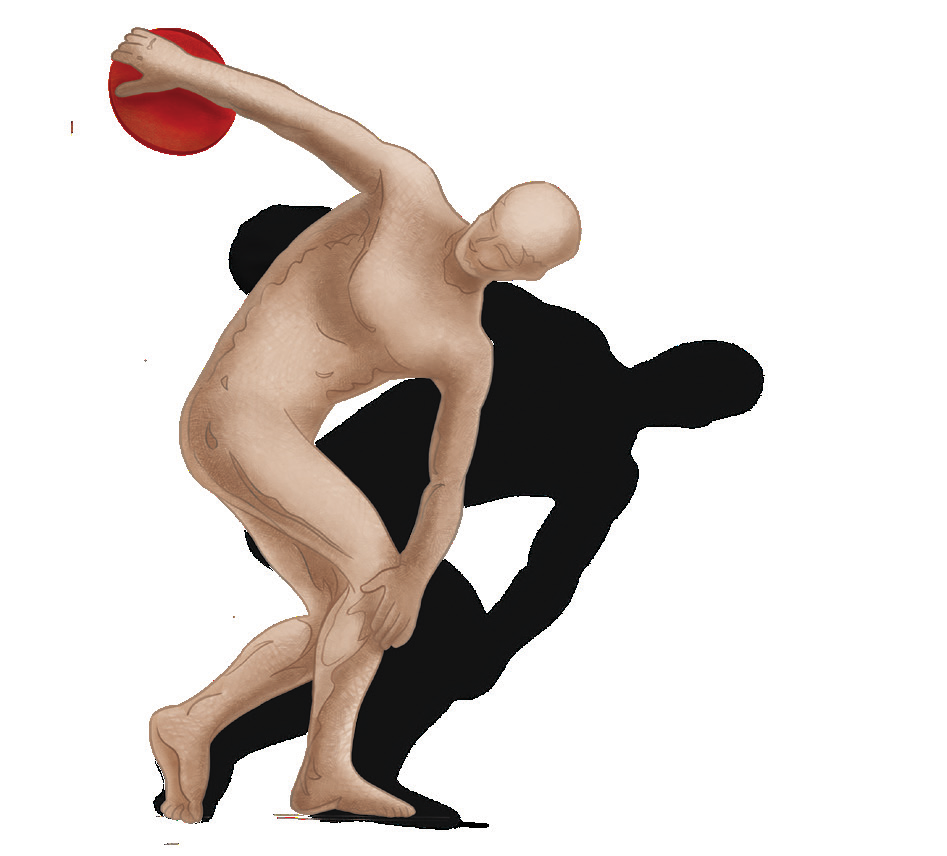

Orientações
gerais

Simone Ziasch
Introdução
Este manual foi escrito para os professores de Educação Física que atuam nas escolas e que buscam realizar uma prática pedagógica de qualidade.
Nestas orientações gerais, vamos apresentar as manifestações da cultura corporal de movimento, organizadas em Unidades Temáticas; indicar algumas possibilidades metodológicas para tratar os conhecimentos deste componente curricular e alguns critérios de avaliação, que servirão de base para desenvolver nos alunos algumas competências específicas da área de Linguagens, que, em conjunto com outras, “direcionam a educação brasileira para a formação humana integral e para a construção de uma sociedade justa, democrática e inclusiva.” (BRASIL, 2001, p. 7).
A obra foi produzida seguindo as diretrizes da Base Nacional Comum Curricular (BNCC), documento que define o conjunto de aprendizagens que os alunos devem ter, estabelecendo competências e habilidades que todos devem desenvolver ao longo da escolaridade básica. Esse documento se refere à Educação Física como:
[...] componente curricular que tematiza as práticas corporais em suas diversas formas de codificação e significação social, entendidas como manifestações das possibilidades expressivas dos sujeitos e patrimônio cultural da humanidade. Nessa concepção, o movimento humano está sempre inserido no âmbito da cultura e não se limita a um deslocamento espaço-temporal de um segmento corporal ou de um corpo todo. Logo, as práticas corporais são textos culturais passíveis de leitura e produção. (BRASIL, 2017, p. 171).
Abordagens pedagógicas
Em meio a tantos debates e discursos para se chegar a uma proposta pedagógica adequada para a escola, surgem algumas tendências metodológicas que fizeram e fazem parte da prática dos docentes de Educação Física.
Progressistas e críticas
Dentro das tendências progressistas, podemos citar:
• Desenvolvimentista: voltada para educação pelo movimento (meio e fim da Educação Física), que tem o professor Go Tani como seu principal criador.
• Construtivista-interacionista: que considera a cultura infantil, em que jogos, brinquedos e fantasias são elementos centrais para o aprendizado. Tem como representante João Batista Freire, que propõe uma “educação de corpo inteiro”.
Entre as concepções críticas, destacamos:
• Crítico-superadora: a qual entende que “a Educação Física é uma prática pedagógica que, no âmbito escolar, tematiza formas de atividades expressivas corporais como: jogo,
EDUCAÇÃO FÍSICA 6
esporte, dança, ginástica, formas estas que configuram uma área de conhecimento que podemos chamar de cultura corporal” (SOARES et al., 1992, p. 50). Está fundamentada no materialismo histórico-dialético de Karl Marx, na proposta sociointeracionista de Vygotsky e seus colaboradores Luria e Leontiev e nas pedagogias histórico-críticas dos educadores José Libâneo e Dermeval Saviani. Com vistas à transformação social, “defende o teor pedagógico e político das propostas educativas, na medida em que incentivam a reflexão dos alunos acerca da realidade em que vivem e consequentes medidas interventivas de mudança em determinada direção.” (2001, p. 108).
• Crítico-emancipatória: estruturada por Elenor Kunz, essa tendência entende que o movimento humano deve ser “interpretado como um diálogo entre o ser humano e o mundo, uma vez que é pelo seu “se-movimentar” que ele percebe, sente, interage com os outros, atua na sociedade.” (DAOLIO, 2010, p. 36).
Sistêmica e cultural
• Sistêmica: perspectiva defendida por Mauro Betti, segundo o qual tem os seguintes objetivos: “[...] a Educação Física passa a ter a função pedagógica de integrar e intro-duzir o aluno de 1.º e 2.º graus no mundo da cultura física, formando o cidadão que vai usufruir, partilhar, produzir, reproduzir e transformar as formas culturais da atividade física (o jogo, o esporte, a dança, a ginástica...)” (BETTI, 1992, p. 285). Essa linha teórica utiliza também a expressão Cultura Corporal de Movimento ou Cultura Corporal, ao mesmo tempo em que defende a proposta de uma Educação Física cidadã por meio de três princípios: da inclusão (direito de todas as crianças), da alteridade (considerar o outro como sujeito humano, ouvindo, conhecendo e aceitando o diferente, o exótico, o distante) e da formação e informações plenas (reivindicar direitos ao lazer). (DAOLIO, 2010, p. 53).
• Educação Física Plural, Perspectiva Cultural ou Abordagem Antropológica: alguns estudos acadêmicos vêm apontando para mais esta abordagem de Educação Física, tendo como principais responsáveis Jocimar Daolio e Tarcísio Mauro Vago. Para tanto, apresenta-se um trecho da obra do próprio autor, que diz nunca ter tido o propósito de criar uma nova tendência metodológica: “Mesmo estudando a área de educação física a partir da antropologia social há vários anos, devo ressaltar que nunca tive a intenção de criar uma abordagem de educação física, ou cunhar uma nova denominação para a área [...]” (DAOLIO, 2010, p. 9). Esse professor ainda propõe a “educação física da desordem”, que considera o outro (aluno) a partir de uma relação intersubjetiva, como um indivíduo socializado que compartilha o mesmo tempo histórico do profissional que faz a intervenção. (Idem, p. 73).
EDUCAÇÃO FÍSICA 7
Proposta adotada pela obra
Os manuais estão fundamentados nas abordagens críticas, sistêmica e cultural, por acre-ditarmos que os saberes da cultura corporal de movimento devem ser trabalhados na escola para que os alunos possam se apropriar desses conhecimentos e utilizá-los em várias situações de suas vidas, participando da sociedade de maneira consciente e confiante.
A metodologia empregada nas sugestões de aula não está estanque, mas possibilita uma ampliação ou adaptação por parte dos professores, de acordo com o Projeto Político Pedagógico da escola. O tempo necessário para cada uma das vivências corporais dependerá da participação dos alunos e da maneira como a atividade for conduzida, podendo ser realizada em um dia de aula, dois ou três, conforme o caso.
A construção do conhecimento pelo alunos se dará por meio da práxis pedagógica, ou seja, mediante a vivência prática, da reflexão sobre a cultura corporal de movimento e da res-significação dos conteúdos.
Objetivos gerais
• Experimentar, explorar, conhecer as diferentes manifestações da cultura corporal de movimento (jogos e brincadeiras, ginásticas, danças, esportes, práticas de aventura e lutas);
• Interagir corporalmente, construindo relações de cooperação, respeito, diálogo, superando preconceitos e discriminações;
• Refletir criticamente sobre as práticas corporais e sua relação com questões sociais relevantes como consumismo, padrões de beleza, competitividade, entre outras;
• Utilizar a criatividade na resolução de desafios corporais e na construção de novas possibilidades, fruindo e transformando o acervo da cultura corporal de movimento.
Justificativa
A Educação Física é o componente curricular que propicia aos alunos o acesso ao conhecimento da Cultura Corporal de Movimento, possibilitando a sua atuação na sociedade como produto e agente de cultura.
Ao atingir os objetivos propostos, o aluno terá um desenvolvimento integral e harmônico, desenvolvendo suas potencialidades, habilidades e competências, promovendo uma cultura de paz e equidade social.
Os objetivos não se limitam a desenvolver habilidades físicas, mas propiciam ao aluno a reflexão sobre a prática, a interação com os colegas e o meio, a autoconfiança, a cooperação, a análise crítica sobre as questões sociais relevantes.
EDUCAÇÃO FÍSICA 8
Articulação da metodologia aos resultados esperados
Considerando que a Educação Física escolar pretende que o aluno atue na sociedade como agente de cultura e compreenda como a Cultura Corporal de Movimento é um conhecimento que foi produzido nas relações sociais e de que modo se faz presente na atualidade, a metodologia deverá ir além de atividade física com simples repetição de movimentos corporais instituídos.
Para atingir os objetivos propostos bem como possibilitar a aquisição de habilidades e competências propostas neste manual e na BNCC, você deve se atentar à maneira como administra suas aulas, qual a metodologia adotada. Este material vai auxiliá-lo com propostas que ultrapassam a realização de práticas corporais, propiciando reflexões e criação de novas possibilidades. Para tanto, serão apresentadas propostas de conversas, debates, pesquisas, análises, interações, produções e tantas outras.
Organização da obra
O material é composto por quatro volumes, cujos encaminhamentos estão organizados, na primeira parte, em Orientações Gerais, e, na segunda, Orientações específicas e proposta de atividades, conforme o ano escolar de cada manual. As unidades temáticas que constituem o manual estão organizadas conforme o documento da BNCC e divididas da seguinte forma:
• Brincadeiras e jogos: serão abordados para o 6.º e 7.º ano os jogos eletrônicos, visto que a tecnologia faz cada vez mais parte da vida do ser humano. Inserir a prática de jogos eletrônicos no ambiente escolar vai além da diversão, uma vez que os recursos tecnológicos são um grande aliado no desenvolvimento cognitivo, motor, social, no tratamento de saúde, entre outros benefícios. Nessa unidade há encaminhamentos, inclusive, para que familiares participem de games e interajam na escola, com vistas a aproximar desse universo aluno e comunidade.
• Ginásticas: os alunos chegam à escola com uma capacidade de movimentos adqui-ridos espontaneamente em seu convívio familiar. Na escola, esses aprendizados se consolidam e desenvolvem-se, expandindo a linguagem corporal do aluno. Diante disso, podemos dizer que a ginástica é um sistema de formas específicas de movimentos e que suas técnicas de execução são destinadas ao desenvolvimento físico que envolve as formas e funções e as ações motoras. A ginástica se constitui, assim, ferramenta didática nas aulas de Educação Física.
• Danças: a dança é a linguagem do corpo. É por meio dela que o ser humano pode expressar-se usando diferentes possibilidades e combinações de movimentos corporais.
A dança também é uma manifestação da cultura, e, diante dessa característica, deve estar presente nas aulas de Educação Física para que o aluno compreenda a dança inserida na sua cultura e na de outros povos e comunidades. Dentro da perspectiva cultural, o professor pode explorar vários ritmos que queira desenvolver durante o ano.
EDUCAÇÃO FÍSICA 9
• Esportes: não se pode negar para o aluno o trabalho com os esportes, sendo estes tão presentes no contexto atual, valorizados pela mídia e, de certa forma, alguns deles conhecidos e vivenciados pelos adolescentes. Entretanto, serão oferecidas atividades adaptadas para a escola, onde o esporte será recriado para atender as características dos alunos, do espaço em que serão realizados, do número de participantes na aula, dos materiais disponíveis e/ou confeccionados, sem perder a essência de cada esporte. Serão fornecidos subsídios teóricos para que os alunos possam compreender como estas práticas foram sendo produzidas, em que época, com qual finalidade e como estão colocadas na atualidade, qual a finalidade (lazer, profissão, competição ou divertimento). Além disso, é nesse momento da vida que o alunos terão mais independência e autonomia para conhecer e praticar esportes mais desafiantes, traçando estratégias para a resolução de problemas encontrados nessa faixa etária.
• Lutas: ao abordar o conteúdo lutas, é importante esclarecer aos alunos as suas funções, inclusive apresentando as transformações pelas quais passaram ao longo do tempo. Inicialmente, tinha como finalidade técnicas ligadas ao ataque e à defesa com o intuito de autoproteção e autopreservação. Devido a isso, as lutas foram, muitas vezes, associadas à atitudes de agressão e violência. É importante que esse tipo de pensamento seja combatido na escola e que as lutas sejam exploradas de forma que o aluno perceba que elas caracterizam-se como uma manifestação da cultura corporal. Outro ponto que precisa ser discutido e combatido em sala de aula é o pensamento de que as lutas sejam uma prática realizada apenas por homens, pois cada vez mais mulheres vêm se envolvendo em diversas modalidades de lutas. Dessa forma, os alunos podem refletir e colaborar para a construção de uma sociedade justa, democrática e inclusiva.
• Práticas corporais de aventura: as práticas corporais relacionadas às atividades de aventura têm se tornado muito comum na atualidade. No que se refere às experiências proporcionadas por essas práticas, mesmo que sejam adaptadas às características de cada indivíduo, as estruturas e possibilidades de cada escola e localidade podem proporcionar experiências únicas, por meio de desafios e superação de limites. Nesse sentido, salienta-se a relevância do papel dos professores envolvidos para que as práticas também possam ser instrumentos de formação de cidadãos mais responsáveis. Ainda, é necessário destacar a importância dos cuidados com o meio ambiente, seja rural ou urbano, e a proteção e segurança que cada atividade exige por parte do praticante.
No início do trabalho com cada unidade temática, são relacionadas as habilidades específicas da disciplina e também as competências gerais, as competências da área de linguagem e as competências específicas do componente curricular Educação Física, conforme disposto na BNCC.
As competências são dadas por seu código numérico, e estão descritas a seguir.
EDUCAÇÃO FÍSICA 10
Competências gerais da educação básica
1. Valorizar e utilizar os conhecimentos historicamente construídos sobre o mundo físico, social, cultural e digital para entender e explicar a realidade, continuar aprendendo e colaborar para a construção de uma sociedade justa, democrática e inclusiva.
2. Exercitar a curiosidade intelectual e recorrer à abordagem própria das ciências, incluindo a investigação, a reflexão, a análise crítica, a imaginação e a criatividade, para investigar causas, elaborar e testar hipóteses, formular e resolver problemas e criar soluções (inclusive tecnológicas) com base nos conhecimentos das diferentes áreas.
3. Valorizar e fruir as diversas manifestações artísticas e culturais, das locais às mundiais, e também participar de práticas diversificadas da produção artístico-cultural.
4. Utilizar diferentes linguagens verbal (oral ou visual-motora, como Libras, e escrita), corporal, visual, sonora e digital , bem como conhecimentos das linguagens artística, matemática e científica, para se expressar e partilhar informações, experiências, ideias e sentimentos em diferentes contextos e produzir sentidos que levem ao entendimento mútuo.
5. Compreender, utilizar e criar tecnologias digitais de informação e comunicação de forma crítica, significativa, reflexiva e ética nas diversas práticas sociais (incluindo as escolares) para se comunicar, acessar e disseminar informações, produzir conhecimentos, resolver problemas e exercer protagonismo e autoria na vida pessoal e coletiva.
6. Valorizar a diversidade de saberes e vivências culturais e apropriar-se de conhecimentos e experiências que lhe possibilitem entender as relações próprias do mundo do trabalho e fazer escolhas alinhadas ao exercício da cidadania e ao seu projeto de vida, com liberdade, autonomia, consciência crítica e responsabilidade.
7. Argumentar com base em fatos, dados e informações confiáveis, para formular, negociar e defender ideias, pontos de vista e decisões comuns que respeitem e pro-movam os direitos humanos, a consciência socioambiental e o consumo responsável em âmbito local, regional e global, com posicionamento ético em relação ao cuidado de si mesmo, dos outros e do planeta.
8. Conhecer-se, apreciar-se e cuidar de sua saúde física e emocional, compreen-dendo-se na diversidade humana e reconhecendo suas emoções e as dos outros, com autocrítica e capacidade para lidar com elas.
9. Exercitar a empatia, o diálogo, a resolução de conflitos e a cooperação, fazendo-se respeitar e promovendo o respeito ao outro e aos direitos humanos, com acolhimento e valorização da diversidade de indivíduos e de grupos sociais, seus saberes, identidades, culturas e potencialidades, sem preconceitos de qualquer natureza.
10. Agir pessoal e coletivamente com autonomia, responsabilidade, flexibilidade, resiliência e determinação, tomando decisões com base em princípios éticos, demo-cráticos, inclusivos, sustentáveis e solidários.
EDUCAÇÃO FÍSICA 11
Competências específicas de linguagens para o ensino fundamental
1. Compreender as linguagens como construção humana, histórica, social e cultural, de natureza dinâmica, reconhecendo-as e valorizando-as como formas de significação da realidade e expressão de subjetividades e identidades sociais e culturais.
2. Conhecer e explorar diversas práticas de linguagem (artísticas, corporais e linguísticas) em diferentes campos da atividade humana para continuar aprendendo, ampliar suas possibilidades de participação na vida social e colaborar para a construção de uma sociedade mais justa, democrática e inclusiva.
3. Utilizar diferentes linguagens verbal (oral ou visual-motora, como Libras, e escrita), corporal, visual, sonora e digital , para se expressar e partilhar informações, experiências, ideias e sentimentos em diferentes contextos e produzir sentidos que levem ao diálogo, à resolução de conflitos e à cooperação.
4. Utilizar diferentes linguagens para defender pontos de vista que respeitem o outro e promo-vam os direitos humanos, a consciência socioambiental e o consumo responsável em âmbito local, regional e global, atuando criticamente frente a questões do mundo contemporâneo.
5. Desenvolver o senso estético para reconhecer, fruir e respeitar as diversas manifestações artísticas e culturais, das locais às mundiais, inclusive aquelas pertencentes ao patrimônio cultural da humanidade, bem como participar de práticas diversificadas, individuais e coletivas, da produção artístico-cultural, com respeito à diversidade de saberes, identidades e culturas.
6. Compreender e utilizar tecnologias digitais de informação e comunicação de forma crítica, significativa, reflexiva e ética nas diversas práticas sociais (incluindo as escolares), para se comunicar por meio das diferentes linguagens e mídias, produzir conhecimentos, resolver problemas e desenvolver projetos autorais e coletivos.
Competências específicas de educação física para o ensino fundamental
1. Compreender a origem da cultura corporal de movimento e seus vínculos com a organização da vida coletiva e individual.
2. Planejar e empregar estratégias para resolver desafios e aumentar as possibilidades de aprendizagem das práticas corporais, além de se envolver no processo de ampliação do acervo cultural nesse campo.
3. Refletir, criticamente, sobre as relações entre a realização das práticas corporais e os processos de saúde/doença, inclusive no contexto das atividades laborais.
4. Identificar a multiplicidade de padrões de desempenho, saúde, beleza e estética corporal, analisan-do, criticamente, os modelos disseminados na mídia e discutir posturas consumistas e preconceituosas.
5. Identificar as formas de produção dos preconceitos, compreender seus efeitos e combater posicionamentos discriminatórios em relação às práticas corporais e aos seus participantes.
6. Interpretar e recriar os valores, os sentidos e os significados atribuídos às diferentes práticas corporais, bem como aos sujeitos que delas participam.
7. Reconhecer as práticas corporais como elementos constitutivos da identidade cultural dos povos e grupos.
8. Usufruir das práticas corporais de forma autônoma para potencializar o envolvimento em contextos de lazer, ampliar as redes de sociabilidade e a promoção da saúde.
9. Reconhecer o acesso às práticas corporais como direito do cidadão, propondo e produzindo alternativas para sua realização no contexto comunitário.
10. Experimentar, desfrutar, apreciar e criar diferentes brincadeiras, jogos, danças, ginásticas, esportes, lutas e práticas corporais de aventura, valorizando o trabalho coletivo e o protagonismo.
EDUCAÇÃO FÍSICA 12
Estrutura da obra
O conteúdo das unidades temáticas poderá ser desenvolvido de acordo com a proposta das seções, boxes e ícones distribuídos pela obra e estruturados de forma a auxiliá-lo no trabalho que você realizará com os alunos. A sequência didática, devidamente orientada de forma clara e objetiva, tem a seguinte disposição:
• Seção Iniciando a busca
Apresenta as habilidades e competências a serem desenvolvidas na unidade, com uma contextualização do tema a ser tratado e orientações sobre como expor de modo pro-ficiente os conteúdos propostos.
• Seção Corpo em ação
Propõe a vivência prática das manifestações da cultura corporal, para que os alunos experimentem as mais diversas possibilidades corporais, estéticas, lúdicas, agonistas e emotivas, desafiando seus próprios limites, respeitando os outros, convivendo, coope-rando, partilhando atitudes, normas e valores.
Os encaminhamentos buscam promover a reflexão dos alunos sobre suas ações, para que possam analisar sua própria vivência corporal e a dos outros e, por meio da intervenção pedagógica, respeitem as diferenças e combatam preconceitos. Essas experiências possibi-litarão que conheçam e optem por alguma prática corporal para fruírem de modo autôno-mo nas aulas e fora delas. Também são dados subsídios para a análise e compreensão das práticas corporais, a fim de ampliar o conhecimento do aluno sobre a origem delas, como foram produzidas e as transformações das diferentes manifestações da cultura corporal de movimento (ginásticas, jogos, danças, esportes e lutas) até a atualidade. Essa observação pode ser feita antes, durante ou após as práticas.
Ícone
Leitura complementar

Quando esse ícone aparece, são apresentados textos de referência, que dizem respeito ao assunto tratado. O propósito, também, é de incentivar a busca por outras leituras a partir dos documentos indicados.
• Ícone Alerta para segurança

Indica riscos de acidentes na realização da atividade, sendo necessário reforçar os cuidados e orientações sobre segurança.
• Boxe Sugestões
Esse boxe, disposto ao longo de todo o material, apresenta sugestões de referências bibliográficas comentadas, filmes, séries, documentários e outros vídeos, assim como textos disponíveis em sites, para aumentar seu acervo cultural.
• Boxe Avaliando
Ao final de cada seção Corpo em ação, encontra-se o boxe Avaliando, com diferentes encaminhamentos de avaliação para as práticas desenvolvidas com os alunos.
EDUCAÇÃO FÍSICA 13
Inclusão e interdisciplinaridade
Segundo a Lei Brasileira de Inclusão da Pessoa com Deficiência, nº 13.146/2015, art. 2.º, “Considera-se pessoa com deficiência aquela que tem impedimento de longo prazo de natureza física, mental, intelectual ou sensorial, o qual, em interação com uma ou mais barreiras, pode obstruir sua participação plena e efetiva na sociedade em igualdade de condições com as demais pessoas”.
À vista disso, ao tratarmos da inclusão nas aulas de Educação Física, propomos a equidade, que é a maneira de adaptar situações para um caso específico, a fim de torná-lo mais justo. As crianças com deficiência física, visual, obesidade, baixa estatura, etc. podem realizar muitas propostas sugeridas sem necessariamente serem trocadas por outras, uma vez que as práticas corporais não estão voltadas à performance, à perfeição de técnicas ou aos resultados, mas sim à possibilidade de cada um experimentar as vivências motoras como forma de dimensionar o conhecimento. Por exemplo, um aluno cadeirante não consegue dançar em pé, entretanto pode executar movimentos com os braços e o corpo, estando sentado ou deitado no chão e, assim, vivenciar ricas experiências corporais com a dança. Esse aluno poderá, também, participar das reflexões e das sugestões de novas práticas.
Assim, a equidade requer que a instituição escolar seja deliberadamente aberta à pluralidade e à diversidade, e que a experiência escolar seja acessível, eficaz e agradável para todos, sem exceção,independentemente de aparência, etnia, religião, sexo, identidade de gênero, orientação sexual ou quaisquer outros atributos, garantindo que todos possam aprender. (BRASIL, 2001, p. 11).
Das atividades propostas, algumas apontam para um trabalho interdisciplinar, entendendo este para além da justaposição de disciplinas, ou de usar uma disciplina a serviço da outra, como solicitar que a área de Artes confeccione brinquedos para a Educação Física utilizá-los em suas aulas.
Partindo do princípio que o conhecimento é uma totalidade e que foi didaticamente dividido em componentes curriculares, deve-se estabelecer um diálogo constante entre eles, para que o aluno possa compreender os saberes nas suas mais variadas vertentes.
Temas contemporâneos transversais
Os temas contemporâneos são os assuntos que perpassam todos os componentes curriculares, ou seja, não pertencem a uma área específica. O principal objetivo da sua abordagem é que o aluno reconheça, aprenda e debata sobre temas relevantes da sociedade.
Ao trabalhar seus conteúdos, a Educação Física dará ênfase a vários desses temas. Vejamos alguns exemplos: ao trazer a unidade temática Jogos e, mais especificamente, os Jogos eletrônicos, você certamente estará debatendo o tema Ciência e tecnologia; ao contemplar, na unidade Ginástica, a função desta atualmente, estará falando sobre saúde; quanto ao multiculturalismo, estará fortemente presente ao se tratar da dança e sua produção cultural, sua valorização e importância para o grupo social que a vive; fala-se de cidadania e civismo ao trazer para debate a reivindicação dos espaços públicos para práticas de atividades físicas e de lazer; educação
EDUCAÇÃO FÍSICA 14
no trânsito quando se aborda o ciclismo, a maioria das práticas corporais de aventura se dá em meio a natureza, oportunidade de trazer a temática do meio ambiente, já que este é o próprio
“campo de jogo”, o qual deve ser valorizado e respeitado; e, por fim, para o tema economia, você poderá conversar sobre a “indústria da beleza” corporal.
Avaliação
Ao contrário do que ocorria nos moldes iniciais, a avaliação não pode se configurar em um meio de verificar se os alunos obtiveram ou não êxito em realizar a atividade ou superar os obstáculos. Desse modo, ela se caracterizaria como excludente, ferindo a Lei Brasileira de Inclusão da Pessoa com Deficiência (Lei nº 13.146/2015).
Esta ferramenta “deve mostrar-se útil para as partes envolvidas — professores, alunos e escola —, contribuindo para o autoconhecimento e para a análise das etapas já vencidas, no sentido de alcançar objetivos previamente traçados. Para tanto, constitui-se num processo contínuo de diagnóstico da situação, contando com a participação de professores, alunos e equipe pedagógica.” (DARIDO, 2015, p. 22).
Em Educação Física, é uma verificação que deve acontecer durante todo o processo, a cada aula, pela observação direta que o professor faz sobre os alunos: a) nas rodas de conversa, se participam, dão opiniões e sintetizam as reflexões; b) nas vivências práticas, por meio das atitudes tomadas diante de novos desafios corporais, seus posicionamentos perante situações coletivas, participando ativamente das propostas em grupo, com respeito às opiniões e limitações dos colegas; c) pela maneira como se comportam frente à superação de preconceitos, respeitando e convivendo com as diferenças; d) na elaboração de novas possibilidades corporais, expondo suas ideias com segurança e criatividade; e) nos resultados que apresentam na sistematização do conhecimento, demonstrando a compreensão sobre o conteúdo trabalhado nas aulas dentro de cada unidade temática e também na autoavaliação.
Vale ressaltar a autoavaliação, que tem como propósito que o aluno tome consciência das aptidões e também das dificuldades que tem no processo de aprendizagem, para que possa desenvolver sua autonomia e sua criticidade, buscando, inclusive, a superação.
O registro dos resultados é feito durante todo o processo e pode ser realizado por meio de fichas individuais, com critérios estabelecidos a partir das habilidades e competências descritas na BNCC.
Este manual traz as habilidades mais específicas sempre no início de cada unidade temática. Portanto, optamos por não apresentar indicações de avaliação para cada atividade sugerida, entendendo que os critérios são amplos e poderiam se tornar repetitivos no material.
A seguir, é sugerido um modelo de ficha de autoavaliação, que poderá ser usada como parâmetro para que o aluno tome consciência de como foi seu desempenho, seu comportamento, as possibilidades que teve, as dificuldades enfrentadas, na tentativa de melhorar cada vez mais.
EDUCAÇÃO FÍSICA 15
| AVALIAÇÃO – 8.º ANO | ||||||
|
Aluno(a): _______________________________________________________ Turma: _______________________________ Professor(a): ___________________________________________________________________________________________ |
||||||
| CRITÉRIOS | BRINCADEIRAS E JOGOS | ESPORTES | GINÁSTICAS | DANÇAS | LUTAS | PRÁTICAS CORPORAIS DE AVENTURA |
| Vivenciei e desfrutei de novas modalidades. |
||||||
| Coopero com os colegas nas atividades. |
||||||
| Respeito as limitações de meus colegas. |
||||||
| Fui respeitado por meus colegas. |
||||||
| Aplico as regras específicas de cada modalidade. |
||||||
| Aprendi os conteúdos abordados. |
||||||
|
Evoluí e aprimorei os conteúdos que aprendi. |
||||||
Esse é apenas um exemplo, assim como os demais modelos de fichas avaliativas apresentados no final das Orientações Específicas e Propostas de Atividades. Portanto, você poderá estabelecer outros critérios, utilizar outros tipos de ficha de avaliação e autoavaliação, conforme o Projeto Político Pedagógico e as orientações da equipe pedagógica, bem como dos órgãos responsáveis pela escola em que atua.
EDUCAÇÃO FÍSICA 16